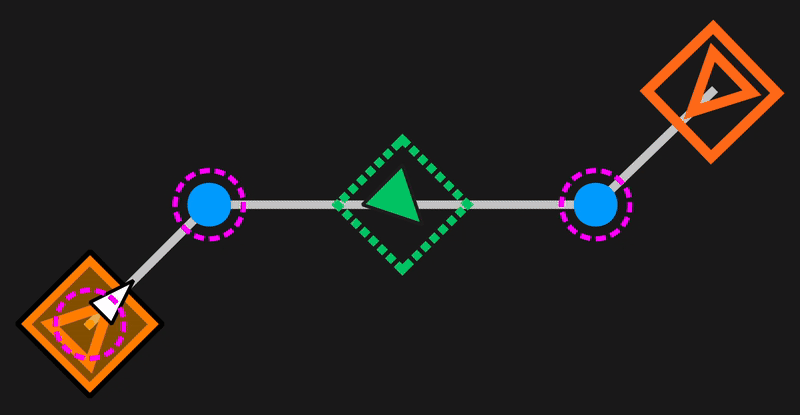
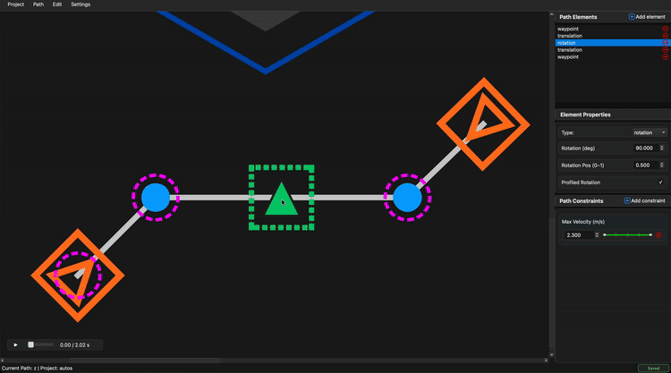

Path Elements¶
A BLine Path is an ordered sequence of path elements. Understanding the four element types — and the rules they follow together — is essential for designing reliable paths, whether you build them in the GUI or in code.
The four element types¶
| Element | Role | Canvas appearance |
|---|---|---|
| Waypoint | Position and holonomic rotation target | Orange rectangle with rotation handle |
| TranslationTarget | Position-only target (shapes the path) | Blue circle |
| RotationTarget | Rotation-only target interpolated along a segment | Green dashed rectangle with rotation handle |
| EventTrigger | Fires a registered action at a point along a segment | Yellow line marker |

Translation elements (Waypoints and TranslationTargets) form the backbone of the path. The robot drives through each in sequence along straight-line segments. Rotation elements (Waypoints and RotationTargets) define how the holonomic heading evolves. Event triggers fire a user-registered Runnable or Command when the robot's projection onto the path crosses a configured position along a segment.
Path endpoints
The first and last elements of a path must both be a Waypoint or a TranslationTarget. A path that begins or ends with a standalone RotationTarget or EventTrigger is invalid and will be refused. A single-element path consisting of only one Waypoint or TranslationTarget is valid — this is how you do a simple drive-to-pose.
Waypoints¶
A Waypoint carries both a translation target and a rotation target. Use one wherever the robot needs to be at a location and face a particular direction — scoring pockets, intake stations, final alignment poses.
// From Translation2d + Rotation2d
new Path.Waypoint(new Translation2d(1.0, 1.0), Rotation2d.fromDegrees(0));
// From Pose2d
new Path.Waypoint(new Pose2d(1.0, 1.0, Rotation2d.fromDegrees(0)));
// With a custom handoff radius (meters)
new Path.Waypoint(new Pose2d(1.0, 1.0, Rotation2d.fromDegrees(0)), 0.3);
// Non-profiled rotation (robot snaps to heading instead of interpolating)
new Path.Waypoint(pose, /*profiledRotation=*/ false);
JSON form:
{
"type": "waypoint",
"translation_target": {
"x_meters": 1.0,
"y_meters": 1.0,
"intermediate_handoff_radius_meters": 0.2
},
"rotation_target": {
"rotation_radians": 0.0,
"profiled_rotation": true
}
}
Translation targets¶
A TranslationTarget only commands position — it shapes the path the robot takes without pinning a specific holonomic heading there.
new Path.TranslationTarget(new Translation2d(2.0, 2.0));
new Path.TranslationTarget(2.0, 2.0);
new Path.TranslationTarget(2.0, 2.0, 0.3); // custom handoff radius
JSON form:
{
"type": "translation",
"x_meters": 2.5,
"y_meters": 2.0,
"intermediate_handoff_radius_meters": 0.2
}
When to reach for one: intermediate points that only exist to curve the path around an obstacle, keep the robot on a corridor, or break a long straight into pieces where you want per-section velocity limits.
Prefer TranslationTargets over Waypoints for path shaping
Every waypoint pins rotation, which costs rotation bandwidth. If you don't actually need the robot to face a specific way at an intermediate point, use a TranslationTarget — the rotation controller is then free to smoothly transition between the waypoints that do matter.
Rotation targets¶
A RotationTarget lives between two translation elements and specifies a heading the robot should reach partway along that segment. The t_ratio parameter (0.0–1.0) fixes where along the segment the target is evaluated.
// Rotate to 90° by the midpoint of the segment
new Path.RotationTarget(Rotation2d.fromDegrees(90), 0.5);
// Snap instantly instead of interpolating
new Path.RotationTarget(Rotation2d.fromDegrees(90), 0.5, /*profiledRotation=*/ false);
JSON form:
{
"type": "rotation",
"rotation_radians": 1.5708,
"t_ratio": 0.5,
"profiled_rotation": true
}
In the GUI, drag a RotationTarget along its segment to adjust its t_ratio visually.

Profiled vs non-profiled rotation¶
Rotation targets (and the rotation embedded in a Waypoint) carry a profiled_rotation flag:
| Mode | Behavior |
|---|---|
profiled_rotation = true (default) |
The rotation setpoint interpolates between the previous rotation target and this one, following the robot's progress along the segment. Produces smooth sweep-style turns. |
profiled_rotation = false |
The rotation setpoint snaps to this heading immediately. Use for sharp, intentional reorientations that shouldn't be spread across the segment. |
In both cases the rotation PID still enforces the configured max rotational velocity and acceleration.
Event triggers¶
An EventTrigger is a zero-width element that fires a registered action when the robot's projection onto the current segment reaches the trigger's t_ratio. See Event Triggers for the full guide. Minimal example:
// Register once, at robot init
FollowPath.registerEventTrigger("shoot", () -> shooter.shoot());
// Place it in a path
new Path(
new Path.Waypoint(new Translation2d(1, 1), Rotation2d.fromDegrees(0)),
new Path.EventTrigger(0.5, "shoot"),
new Path.Waypoint(new Translation2d(3, 1), Rotation2d.fromDegrees(0))
);
JSON form:
{
"type": "event_trigger",
"t_ratio": 0.5,
"lib_key": "shoot"
}
The trigger fires once per run, based on the robot's projected position along the segment — it fires even if the robot is off the nominal path line.
Building complete paths¶
The four element types compose freely:
Path myPath = new Path(
// Start at (1,1) facing 0°
new Path.Waypoint(new Translation2d(1.0, 1.0), Rotation2d.fromDegrees(0)),
// Fire the intake action halfway through the first segment
new Path.EventTrigger(0.5, "deployIntake"),
// Curve through (2,2)
new Path.TranslationTarget(new Translation2d(2.0, 2.0)),
// Spin to 90° at the midpoint of the next segment
new Path.RotationTarget(Rotation2d.fromDegrees(90), 0.5),
// End at (3,1) facing 180°
new Path.Waypoint(new Translation2d(3.0, 1.0), Rotation2d.fromDegrees(180))
);
Ordinals and constraints
Each translation element gets a translation ordinal; each rotation element gets a rotation ordinal. Waypoints increment both. These ordinals are what ranged constraints refer to when you want per-section velocity/acceleration limits.
Single-element paths¶
A single Waypoint path is a valid, useful construct — it turns BLine into a clean drive-to-pose command:
Path alignToReef = new Path(
new Path.Waypoint(reefScoringPose)
);
pathBuilder.build(alignToReef).schedule();
This is often the simplest way to do teleop auto-align: build the path on button press, schedule the command, and let BLine handle acceleration limiting, rotation, and tolerances.
Next¶
- Constraints — global vs path-specific vs ranged.
- Event Triggers — registering actions and placing triggers.
- Key Parameters — handoff radii, t_ratio, tolerances.